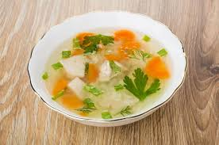
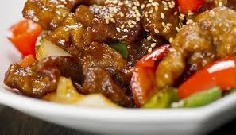

INGREDIENTES PRINCIPALES

La alimentación en la Antigua China variaba según la región: en el norte se consumía trigo y mijo, mientras que en el sur predominaba el arroz. Se utilizaban ingredientes naturales y frescos, incluyendo vegetales, tofu, pescados y carnes.
HÁBITOS Y CULTURA
Los antiguos chinos comían con palillos y bebían té durante las comidas. Compartían los platos en el centro de la mesa, simbolizando unión familiar. Además, la comida tenía un enfoque medicinal, buscando el equilibrio entre el Yin y el Yang.
PLATOS DESTACADOS
- Fideos de trigo con vegetales y carne
- Sopa de arroz y hierbas
- Carne de cerdo agridulce
- Tofu al vapor con salsa de soya